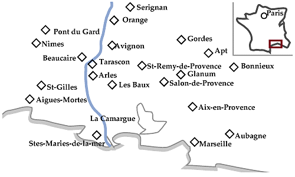

| 1日目 （土） |
成田12:45発--（Air France）--パリシャルル・シャルル・ド・ゴール空港（同日）18:15着--20:30発--（Air France）--ニース空港22:00着----ニース泊 |
| 2日目 （日） |
ニース駅発14:33--（フランス国鉄SNCF）--マルセイユサンシャルル駅16:55着--17:10発--（SNCF乗換え）--エクス・アン・プロヴァンス駅17:42着----エクス・アン・プロヴァンス泊 |
| 3日目 （月） |
エクス・アン・プロヴァンス市内観光--ミラボー大通り、グラネ美術館、サンソヴール教会、セザンヌのアトリエなどなど----エクス・アン・プロヴァンス泊 |
| 4日目 （火） |
エクス・アン・プロヴァンス----（レンタカー:以下9日目まで移動は車）----シルヴァカーヌ修道院----ルールマラン----アプト泊 |
|
5日目 （水） |
アプト----ボニュー、メネルブなどリュベロン山脈の小さな村々を経由----ゴルド泊 |
| 6日目 （木） |
ゴルド----ヴォークリューズの泉----セナンク修道院----オランジュ市内観光--古代劇場、凱旋門などなど----ポン・デュ・ガール----オランジュ泊 |
| 7日目 （金） |
オランジュ----アヴィニョン市内観光--教皇宮殿、サン・ベネゼ橋、カルベ美術館などなど----サン・レミ・ド・プロヴァンス泊 |
| 8日目 （土） |
サン・レミ・ド・プロヴァンス市内観光--グラナムの遺跡----レ・ボー・ド・プロヴァンス----アルル泊 |
| 9日目 （日） | アルル市内観光--円形闘技場、古代劇場、アルラタン博物館、エスパース・ヴァン・ゴッホなどなど----アルル泊 |
| 10日目（月） | アルル駅12:07発--（SNCF）--アヴィニョン駅12:25着--13:07発--（TGV乗換え）--パリリヨン駅16:59着----パリ泊 |
| 11日目（火） | パリ市内観光--オルセー美術館、セーヌ川遊覧、凱旋門、エッフェル塔などなど----パリ泊 |
| 12日目（水） | パリ市内観光--オランジュリー美術館、ルーブル美術館などなど----パリ泊 |
| 13日目（木） | パリシャルル・シャルル・ド・ゴール空港23:05発--（Air France機中泊）-- |
| 14日目（金） | --成田18:00着 |